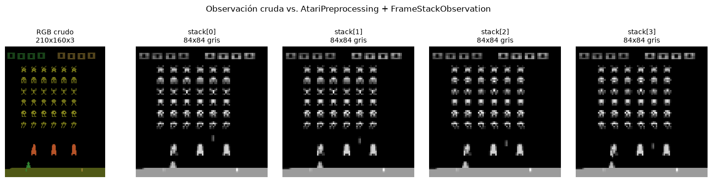

CC3092 · Deep Learning y Sistemas Inteligentes · Laboratorio #5
El Arcade Learning Environment (ALE) expone los juegos del Atari 2600 como problemas de aprendizaje por refuerzo bajo una interfaz uniforme: observación, acción, recompensa y fin de episodio. El problema que resuelve es metodológico antes que técnico. Antes de ALE cada investigador evaluaba su algoritmo en un dominio hecho a la medida, lo que impedía comparar resultados entre trabajos y facilitaba, sin mala intención, ajustar el algoritmo al problema. ALE ofrece más de un centenar de juegos con dinámicas, horizontes y estructuras de recompensa muy distintas, pero con la misma interfaz y el mismo espacio de acción crudo. Esa combinación obliga a que un algoritmo sea general: no se puede ganar en el conjunto completo afinando un dominio a la vez.
ALE no reimplementa los juegos: es una capa de instrumentación sobre Stella, un emulador de Atari 2600 de código abierto que ejecuta la ROM original del cartucho. ALE se conecta a él para leer la pantalla y los 128 bytes de RAM, inyectar las pulsaciones del joystick como si vinieran de un jugador, y extraer el marcador desde la memoria para convertirlo en recompensa. La dinámica del entorno es por tanto exactamente la del juego comercial: no hay una simulación aproximada de por medio, y el agente enfrenta las mismas peculiaridades del hardware de 1977 que enfrentaba un humano, incluido el parpadeo de sprites que se discute en §3.4.
ALE/SpaceInvaders-v5 es una configuración concreta de la ROM, no el juego entero. Los ejes que la
definen son parámetros de gym.make:
| Parámetro | Valor en v5 | Efecto |
|---|---|---|
obs_type | "rgb" | Imagen 210×160×3. Alternativas: "grayscale" (210×160) y "ram" (128 bytes) |
frameskip | 4 | Cada acción se repite durante k frames del emulador |
repeat_action_probability | 0.25 | Sticky actions: con esa probabilidad se ignora la acción nueva y se repite la anterior |
full_action_space | False | False → las 6 acciones que la ROM usa; True → las 18 del joystick |
mode / difficulty | 0 / 0 | Selectores de las variantes internas del cartucho original |
El sufijo -ram de la nomenclatura antigua corresponde hoy a obs_type="ram": mismo
juego y misma dinámica, observación distinta. La diferencia crítica entre v5 y v4 es
repeat_action_probability=0.25. Sin ella el Atari es completamente determinista, de modo que un
agente puede memorizar una secuencia fija de acciones y obtener un puntaje altísimo sin haber aprendido nada
sobre la dinámica. Las sticky actions inyectan estocasticidad y fuerzan robustez; por eso
los resultados sobre v4 y v5 no son comparables, y reportar la variante es parte de
reportar el resultado.
Con frameskip=k el agente elige una acción y el emulador la sostiene durante k frames,
devolviendo solo el último y la suma de las recompensas intermedias. Importa por tres
razones distintas:
El jugador controla un cañón láser en la base de la pantalla que solo se desplaza horizontalmente y dispara hacia arriba. Enfrente hay una formación de 6×6 invasores que avanza lateralmente y baja una fila cada vez que toca un borde, acelerando conforme quedan menos; cuatro búnkeres destructibles dan cobertura parcial. El objetivo es eliminar la formación antes de que llegue abajo, con tres vidas; el episodio termina al perderlas todas.
La recompensa es exactamente el incremento del marcador original entre pasos consecutivos:
ALE lee el score desde la RAM y devuelve la diferencia. De ahí se siguen tres propiedades que condicionan
cualquier algoritmo entrenado sobre este juego. Es dispersa, porque la mayoría de los pasos
devuelve 0.0 y solo los aciertos puntúan. Su magnitud es heterogénea: 5, 10,
15, 20, 25 o 30 puntos según la fila del invasor, y entre 50 y 200 la nave nodriza que cruza por arriba. Y
no hay señal negativa: perder una vida no penaliza, el costo de morir es implícito —se acaba
el episodio y ya no se puede seguir puntuando—, de modo que un agente miope no tiene incentivo explícito
para esquivar. El return no descontado de un episodio coincide con el puntaje final de la partida.
| ALE/SpaceInvaders-v5 | CartPole-v1 | |
|---|---|---|
observation_space | Box(0,255,(210,160,3),uint8) | Box(4,) de float32 |
| Valores por observación | 100 800 | 4 |
| Semántica | Píxeles crudos de la pantalla | Posición, velocidad, ángulo, velocidad angular |
action_space | Discrete(6) | Discrete(2) |
La razón de dimensionalidad es de 25 200×, pero la diferencia de fondo no es el tamaño sino qué se entrega. CartPole devuelve el estado verdadero del sistema, ya extraído: el agente solo debe aprender la política. Space Invaders devuelve píxeles, y eso cambia el problema en cuatro sentidos:
Con obs_type="ram" el espacio pasa a Box(0,255,(128,),uint8): los 128 bytes de
memoria de la consola, donde cada byte es una variable interna del juego (posiciones, contadores, vidas,
marcador). Conviene cuando se quiere aislar el problema de control del de visión para
estudiar el algoritmo de RL sin el costo de una CNN; cuando hay poco presupuesto de cómputo,
ya que un MLP sobre 128 bytes entrena órdenes de magnitud más rápido; y para diagnóstico o
reward shaping, pues identificando qué byte guarda qué se puede construir una señal
auxiliar. Sus desventajas: la representación es opaca y arbitraria —los bytes no tienen semántica documentada
y cambian por juego— y se aleja del planteamiento original de ALE, aprender desde la misma entrada sensorial
que ve un humano.
Space Invaders usa por defecto el espacio reducido, Discrete(6), con solo las acciones que la ROM
interpreta. Con full_action_space=True se expone el joystick completo (Discrete(18)),
cuyas doce acciones adicionales son redundantes aquí porque el cañón no se mueve verticalmente.
| Índice | Acción | Significado |
|---|---|---|
| 0 | NOOP | No hacer nada; el cañón queda donde está |
| 1 | FIRE | Disparar sin desplazarse |
| 2 | RIGHT | Desplazar el cañón a la derecha |
| 3 | LEFT | Desplazar el cañón a la izquierda |
| 4 | RIGHTFIRE | Desplazarse a la derecha y disparar en el mismo paso |
| 5 | LEFTFIRE | Desplazarse a la izquierda y disparar en el mismo paso |
Las acciones compuestas son las más valiosas en la práctica: permiten esquivar y disparar en el mismo paso de decisión, sin sacrificar uno por el otro. El agente de regla simple de §4.2 las usa precisamente para eso.
AtariPreprocessing y FrameStackObservation
gymnasium.wrappers.AtariPreprocessing estandariza el pipeline introducido por el DQN de Nature.
Aplica escala de grises (el color no aporta información de control y reduce el tensor a un
tercio); redimensionado a 84×84, que baja de 100 800 a 7 056 valores por frame, 14.3×
menos; frame skipping con k=4; max-pooling de los dos últimos
frames, indispensable porque el Atari alterna sprites entre frames por límite de hardware y sin esto
algunos objetos parpadean y desaparecen del frame muestreado; y noop_max=30, que
reinicia con un número aleatorio de NOOP para que el agente no memorice un inicio fijo. A esto
suele sumarse el recorte de recompensa a {-1, 0, +1}, que permite usar
los mismos hiperparámetros en juegos cuyas escalas de puntaje difieren en órdenes de magnitud, al precio de
perder la distinción entre un acierto de 5 y uno de 30 puntos.
FrameStackObservation (antes FrameStack) apila las k últimas observaciones en
un tensor, típicamente (4, 84, 84). Se usa junto con AtariPreprocessing
porque resuelve exactamente el problema de observabilidad parcial de §3.1: con cuatro frames apilados el agente
infiere dirección y velocidad —que un proyectil sube o que la formación baja— y el estado
vuelve a ser aproximadamente markoviano. Conviene recordar que AtariPreprocessing hace su propio
frame skipping, así que el entorno base debe crearse con frameskip=1 para no multiplicar los saltos.

AtariPreprocessing (84×84, escala de grises) más
FrameStackObservation. La secuencia es lo que permite al agente percibir movimiento.
ale_utils.py concentra la infraestructura para crear entornos, ejecutar agentes sin entrenamiento
y grabar video. Es independiente de Atari: crear_entorno y ejecutar_episodio
funcionan con cualquier entorno de Gymnasium, lo que se verificó contra CartPole-v1.
| Función | Rol |
|---|---|
crear_entorno | Crea el entorno con gym.make. Si recibe video_folder, lo envuelve con RecordVideo; episode_trigger decide qué episodios grabar (por defecto, todos). Pasa **kwargs a gym.make. |
agente_aleatorio | Baseline sin entrenamiento: retorna env.action_space.sample(). |
agente_regla_simple | Heurística sobre píxeles en dos niveles: esquivar y apuntar (§4.2). |
ejecutar_episodio | Corre un episodio hasta terminated/truncated o max_steps. Retorna pasos, recompensa total, cómo terminó y el último info. |
generar_video_agente | Alto nivel: crea el entorno con grabación, corre n episodios, lo cierra y retorna las rutas de los videos con las métricas de cada episodio. |
resumir_metricas | Reporte: tabla de texto con pasos y recompensa por episodio. |
env.close() va dentro de un finally. RecordVideo
escribe el .mp4 al cerrar el entorno; si un episodio lanza una excepción y no se cierra, el
archivo queda truncado o vacío.env.unwrapped.get_action_meanings(), no por índice fijo, de modo que la heurística sigue siendo
válida con full_action_space=True, donde los índices cambian.ejecutar_episodio siembra también el action_space.
env.reset(seed=s) solo fija el generador del entorno; action_space.sample() tiene el
suyo. Sin sembrarlo, una corrida de agente_aleatorio no es reproducible.agente_regla_simple vuelve a comportarse como aleatorio
si la observación no es un frame RGB de 210×160×3 —por ejemplo con obs_type="ram"— o si el
espacio de acción no expone las acciones que necesita.
La heurística localiza tres sprites por color exacto —nave (50,132,50), invasores
(134,134,29) y proyectiles (142,142,142)— y decide en dos niveles: si hay un proyectil
en la franja inmediatamente encima de la nave y a menos de cuatro columnas de ella, se aparta hacia el lado
contrario; si no hay peligro, se alinea con la columna del invasor vivo más cercano y dispara. La nave se busca
solo en las filas 180–195 porque el marcador usa el mismo verde en la parte superior.
El paso de esquive no estaba en la primera versión, que solo apuntaba. Medida sobre 8 semillas, esa versión rendía peor que el agente aleatorio (70.6 contra 134.4 de return medio): alinearse con una columna de invasores deja la nave justo bajo las bombas que esa columna deja caer, y moría antes de puntuar. Añadir el esquive invirtió el resultado —un recordatorio de que en Atari una heurística plausible sobre el papel puede ser activamente mala, y de que hay que medirla.
Una limitación conocida: el láser del jugador y las bombas de los invasores comparten color, así que un disparo propio recién lanzado puede leerse como amenaza. El efecto resultó benigno —hace que la nave se mueva después de disparar, que es lo que conviene—, pero es una imprecisión real del detector, no un diseño deliberado.
Evaluación sobre 10 semillas de ALE/SpaceInvaders-v5, sin grabación de video:
| Agente | Return medio | Desv. est. | Mín. | Máx. | Pasos medios |
|---|---|---|---|---|---|
| Aleatorio | 115.0 | 49.8 | 30 | 225 | 445.8 |
| Regla simple | 239.5 | 56.8 | 110 | 320 | 522.7 |
La regla simple duplica el return medio del aleatorio con una desviación estándar comparable en
términos absolutos, es decir, bastante más consistente en términos relativos (coeficiente de variación ≈0.24
contra ≈0.43). Eso confirma que el pipeline observación → decisión → acción → recompensa está bien conectado y
que la política efectivamente lee el frame. Conviene no leer de más en el número: ninguno de los dos
agentes aprende —la heurística tiene el conocimiento del juego cableado a mano y no mejoraría con un
millón de episodios— y ambos quedan muy por debajo de un DQN entrenado (~600–1000 puntos) o de un humano
(~1650). Sustituir funcion_agente por la política de una red entrenada es el único
cambio necesario para reutilizar el módulo en el proyecto. Los videos entregados son episodios completos:
325 pasos y 65 puntos el del agente aleatorio, 460 pasos y
215 puntos el de regla simple.